1. このページ: 統合画像解説
まずこのページで、前半のAAOP報告と後半の慢性痛パートを同じ時系列の中で読みます。AAOPの「専門領域の広がり」と、和嶋先生パートの「慢性痛をどう説明し管理するか」を一本につなげています。
2026年5月 口腔顔面痛 On-line セミナー
このページは、ログイン後のボタンから最初に開く「3つの資料」の入口です。前半のAAOP 50周年記念学術大会参加報告、後半の慢性口腔顔面痛に対する私見、そして両者をつなぐ統合解説を、切り出し画像と本文で読めるように再構成しました。
ローカル動画を置かなくても内容を追えるように、各画像について「何が映っているか」「そこで何を読み取るか」「臨床ではどう説明・判断に使うか」を順番に記載しています。

本資料は、動画画面、発表スライド、切り出し画像、関連論文情報をもとに再構成した解説です。逐語録ではありません。医療判断に使う場合は、原著論文、診療ガイドライン、薬剤添付文書、所属施設の倫理・安全手順を必ず確認してください。
まずこのページで、前半のAAOP報告と後半の慢性痛パートを同じ時系列の中で読みます。AAOPの「専門領域の広がり」と、和嶋先生パートの「慢性痛をどう説明し管理するか」を一本につなげています。
Orlandoの会場、国際交流、ハンズオン、プログラム、ポスター、BoNT-Aの機序とエビデンスを詳しく読みます。口腔顔面痛が、歯科局所から慢性痛医学・睡眠・薬物療法・AI・再生医療へ広がる流れを確認します。
大久保昌和先生・和嶋浩一先生を中心とした討論から、COPCs、ICOP、痛覚変調性疼痛、PTSD、身体感覚増幅、破局的思考、管理プロトコルまでを、患者説明に使える形で整理します。
最初に押さえるべき流れは、前半が「口腔顔面痛専門領域の現在地」を示し、後半が「慢性口腔顔面痛を日本の歯科臨床でどう説明し、どう管理するか」を扱っている点です。ここを分けずに読むと、AAOPの学術的広がりが、和嶋先生パートの臨床的な説明法へ自然につながります。
冒頭では、AAOP 50周年記念大会の参加報告が前半に、慢性口腔顔面痛の討論が後半に置かれていることが示されます。単なる海外学会参加記ではなく、AAOPで扱われる専門領域の広がりを見たうえで、慢性痛患者を日本の歯科臨床でどう理解するかに進む構成です。
ここで重要なのは、口腔顔面痛を「歯」「顎関節」「咀嚼筋」だけに閉じないことです。睡眠、頭痛、神経障害、薬物療法、心理社会的評価、患者教育までが同じ診療領域に入るため、慢性口腔顔面痛の説明も広い視点から行う必要があります。

50周年という節目は、Orofacial Painが米国で教育・研究・専門医制度を持つ領域として成熟してきたことを示します。これは「歯科の中の特殊な痛み」ではなく、「慢性痛医学の中にある口腔顔面痛」として読むべき場面です。
日常歯科臨床での意味は、歯原性疼痛の除外だけでは不十分ということです。非歯原性歯痛、TMD、神経障害性疼痛、頭痛関連顔面痛、BMS、持続性特発性歯痛を鑑別し、必要なら専門職連携へつなぐ地図を持つ必要があります。

AAOPのプログラムには、TMD、頭痛、睡眠、薬物療法、神経障害性疼痛、慢性痛、患者教育が並びます。これは、口腔顔面痛診療が「痛い歯を探す」だけでは成立しないことを示す実践的な地図です。
歯科医師がすべてを単独で治療する必要はありません。しかし、どの患者で睡眠評価が必要か、どの患者で神経内科やペインクリニック紹介が必要か、どの患者で心理社会的支援が必要かを見分ける力は必要になります。

ボツリヌス毒素Aは咀嚼筋の過活動を抑える薬として知られますが、ここでは神経終末、神経ペプチド、グルタミン酸、神経原性炎症、末梢性感作という慢性痛の機序と結びつけて扱われます。
臨床では、BoNT-Aを「効きそうだから打つ」ではなく、筋性疼痛なのか、神経障害性疼痛なのか、痛覚変調性要素が強いのかを見立てたうえで使う必要があります。局所注射は有用なことがありますが、痛み全体の説明や管理を代替するものではありません。

慢性痛パートでは、痛みを不快な感覚かつ情動の体験として扱います。これは痛みが気のせいという意味ではありません。脳が痛みを処理するとき、感覚、恐怖、不安、記憶、注意、予測、睡眠、疲労が同時に関わるという意味です。
患者説明では、「検査では異常がありません」だけでは不十分です。「痛みは本物です。ただし歯の損傷だけでは説明できず、痛みを処理する神経系が敏感になっています」と言い換えることで、否定ではなく治療方針として伝えられます。

COPCsは、TMD、線維筋痛症、過敏性腸症候群、片頭痛、慢性疲労、慢性腰痛などが同じ患者に重なりやすいことを示します。ICOPは、歯、筋、顎関節、神経、頭痛関連、特発性疼痛を整理する分類です。
この二つを組み合わせると、患者に「あなたの痛みは一か所の異常だけではなく、痛み処理のシステム全体が敏感になっている可能性があります」と説明できます。これは局所病変を見落とすためではなく、局所処置を繰り返しすぎないための地図です。

外傷記憶、過覚醒、回避、睡眠障害、身体感覚への注意の固定は、痛みの処理を敏感にします。これは「心理的だから痛みが嘘」という意味ではなく、脳と自律神経が危険を強く予測し、痛みを大きく感じやすくなるという意味です。
診療では、突然触らない、何をするか先に説明する、患者が止められる合図を決める、処置後の見通しを共有することが重要になります。安全な診療体験そのものが、痛みの増幅を下げる治療の一部になります。

慢性口腔顔面痛では、診断名をつけるだけでは患者は良くなりません。診断名は、除外すべき疾患、避けるべき処置、必要な説明、使う薬、紹介先、生活指導を決めるためにあります。
治療目標には、痛みの数値だけでなく、睡眠、食事、会話、外出、仕事、薬の使用量、不安、自己効力感を入れます。痛みが完全に消える前に生活機能が戻ることがあり、その改善を患者と共有することが慢性痛管理の中心です。
今回、ローカル動画から代表場面を再度切り出し、既存の整理済み画像と照合しました。ここでは、動画本体を残さなくても流れを確認できるように、会議画面そのもののフレームを時系列で残しています。
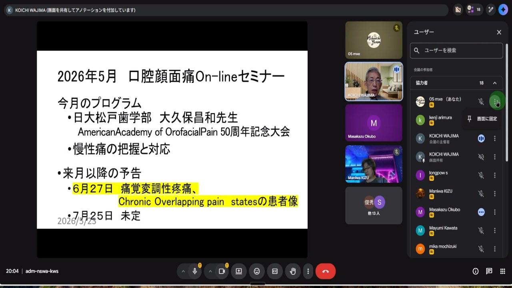
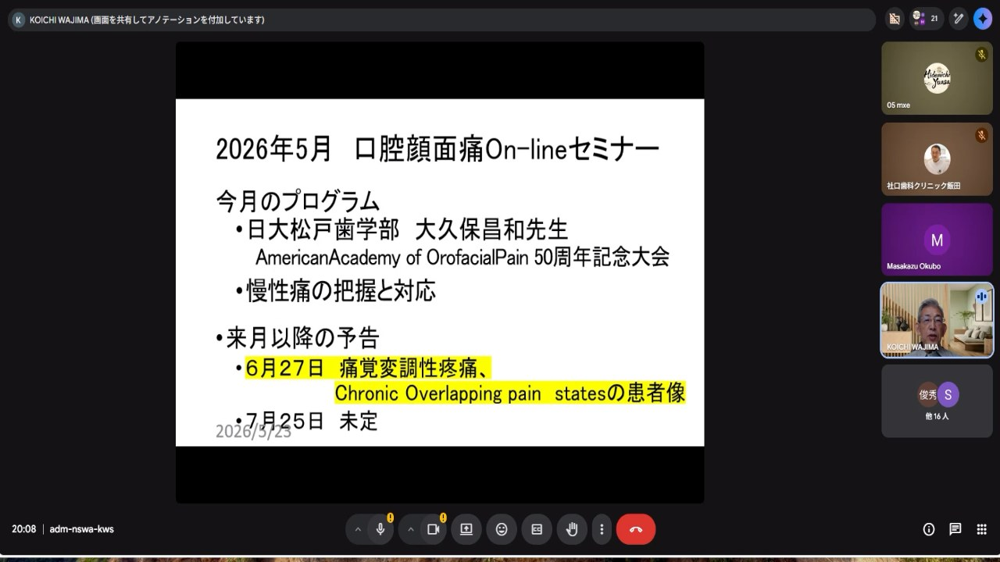
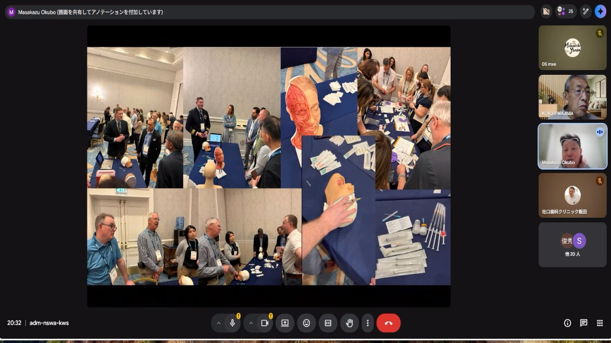
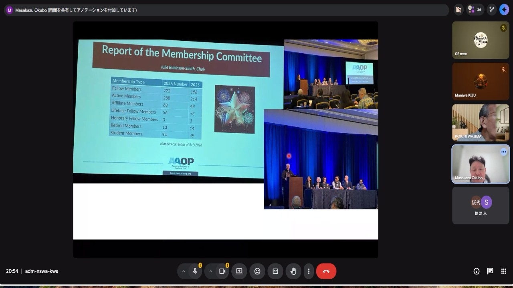
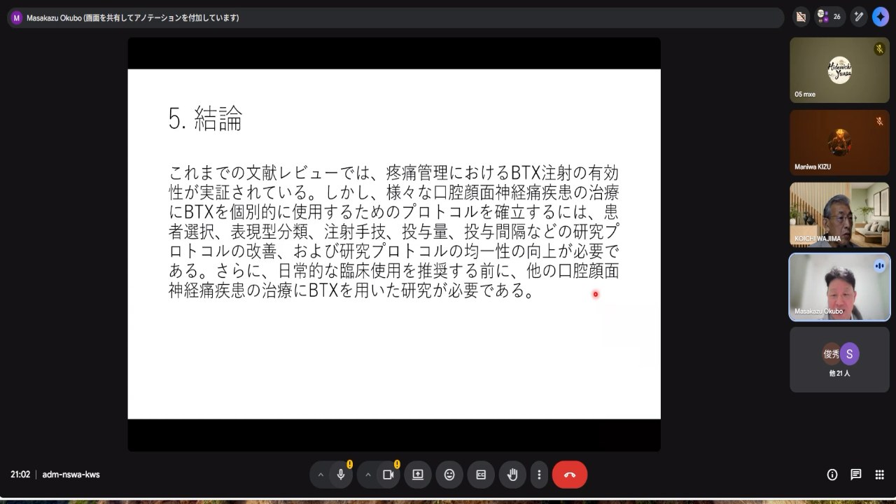
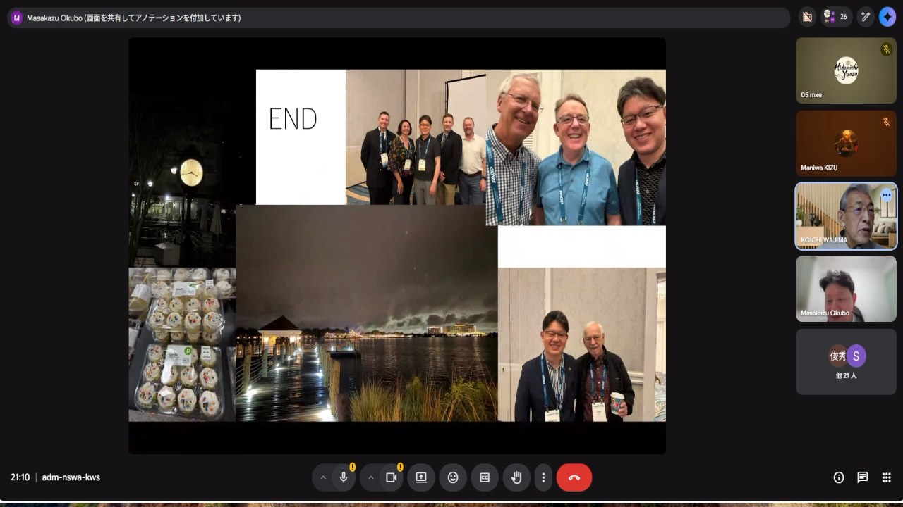
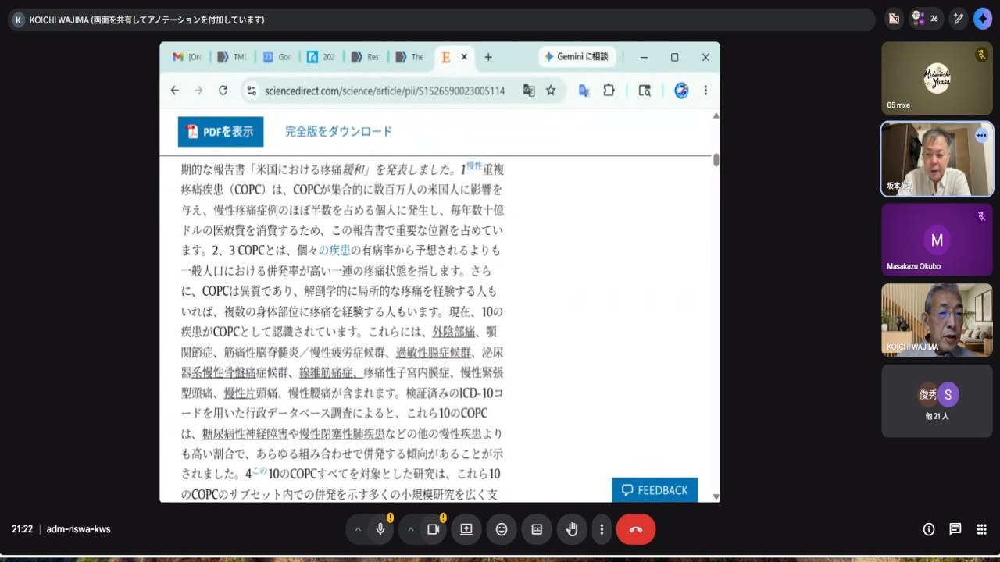
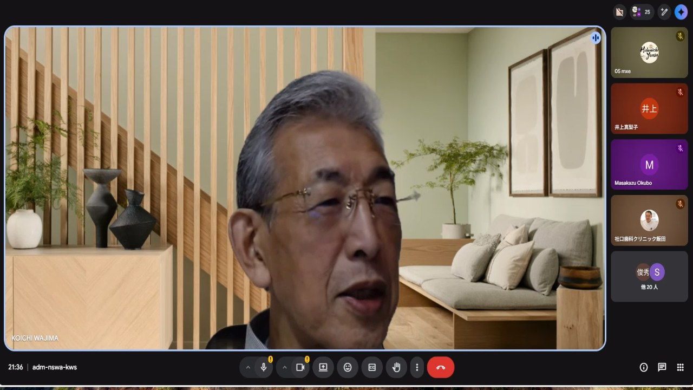
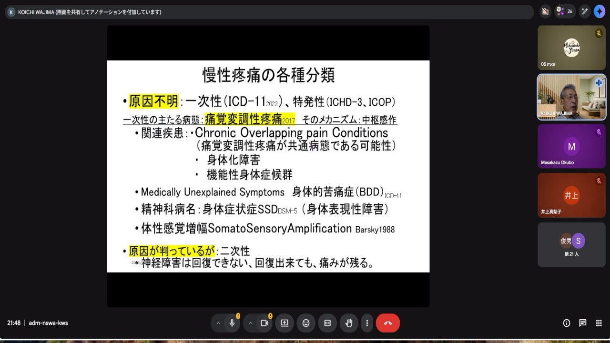
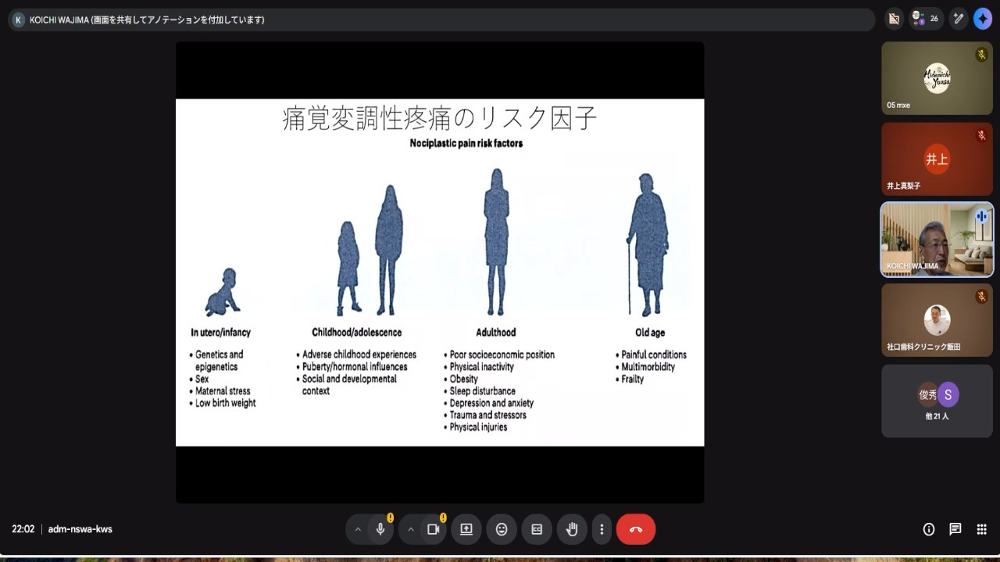
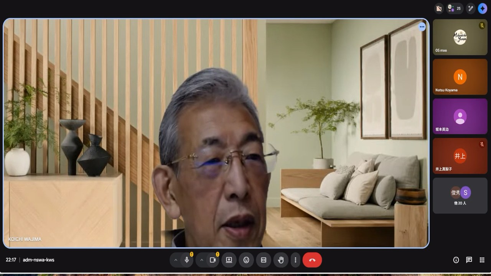
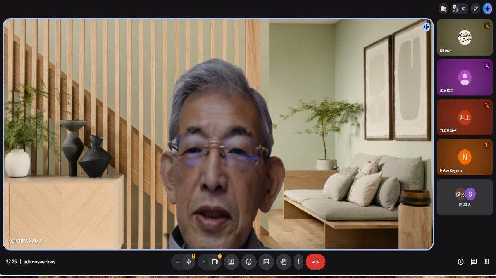
AAOP報告は、現地訪問、会場、教育、プログラム、研究発表、BoNT-Aの順に進みます。ここでは、各画像を「学会の風景」としてではなく、口腔顔面痛診療がどこへ向かっているかを示す資料として読みます。

Prof. Dorrit Nitzan、Hadassah School of Dental Medicine、Hebrew Universityが紹介される場面は、AAOP報告が単なる米国学会の記録ではなく、国際的な研究・教育・臨床ネットワークの中に位置づけられていることを示します。
慢性痛診療では、症例への向き合い方、説明の仕方、紹介のタイミング、心理社会的評価の扱いが国や施設で異なります。国際交流は、そうした臨床文化を比較し、日本の診療に取り入れるための入口になります。

ハンズオンや臨床デモの場面は、Orofacial Painが知識だけでなく技能を必要とする専門領域であることを示します。触診、感覚検査、筋・関節評価、注射療法、患者説明は、書籍だけでは身につきにくい臨床技術です。
慢性痛患者では、手技そのものが不安や警戒を引き起こすことがあります。そのため、正確な手技だけでなく、触れる前の説明、患者が止められる合図、処置後の見通しまで含めて学ぶ必要があります。

学術講演の場は、個別治療の紹介だけではありません。診断分類、アウトカム、教育、専門医制度、研究デザインを更新する場所です。口腔顔面痛のように患者背景が多様な領域では、どの患者群に、どの評価指標で、どの期間効果を見るかが重要になります。
慢性口腔顔面痛の診療では、分類が変われば治療の選び方も変わります。学術講演は、その基盤を共有し直す場として読むと理解しやすくなります。

ポスター会場では、症例、表現型、治療反応、疫学、教育、評価尺度などが共有されます。慢性口腔顔面痛では、同じ診断名でも痛みの性質、併存症、心理社会的背景、治療反応が異なります。
そのため、「この患者にはなぜ効いたのか」「なぜ効かなかったのか」という日常診療の疑問を、次の研究に変える視点が大切です。AAOPのポスターは、臨床家が問いの立て方を学ぶ場でもあります。

systematic reviewは、BoNT-Aが一部の口腔顔面神経障害性疼痛で有望である可能性を示します。一方で、対象疾患、投与量、注射部位、評価時期、アウトカムにはばらつきがあります。
臨床では、「効く治療」と単純化せず、どの病態の患者に、どの目的で、どの期間試し、何をもって中止または継続するかを決めておく必要があります。これは慢性痛診療全体に共通する読み方です。

BoNT-Aでは、注射部位、希釈、単位数、投与間隔、副作用評価の標準化が十分でない場面があります。咀嚼筋への反復投与では、筋力、咀嚼機能、顔貌、骨・筋量への影響も考える必要があります。
患者には、「新しい治療」への期待だけでなく、効果判定の時期、限界、副作用、撤退基準をあらかじめ説明します。慢性痛診療では、治療を増やすことより、治療をどう評価して整理するかが安全性につながります。
後半は、話者紹介から討論、COPCs、痛みの定義、慢性痛の病態、ICOP、PTSD、身体感覚増幅、管理プロトコルへ進みます。画像を章ごとに分けず、臨床説明の順番として読みます。

後半は、単なるスライド講義ではなく、臨床家同士が慢性口腔顔面痛の扱い方を検討する場面として始まります。痛みの場所、患者が原因だと思っている場所、神経系が痛みを維持している場所は一致しないことがあります。
歯科では、患者も医療者も痛い部位に処置対象を探しがちです。しかし慢性化した痛みでは、説明、同意、安心感、睡眠、疲労、身体全体の過敏性が、痛みの強さに直接影響します。

和嶋先生の慢性痛パートで核になるのは、検査で局所異常が乏しい患者を否定しないことです。患者の痛みは実在します。ただし、その痛みが歯髄炎、根尖病変、腫瘍、感染、明確な神経損傷だけで説明できるとは限りません。
「歯に異常はありません」ではなく、「歯だけでは説明できない痛みの処理システムの変化が起きています」と説明します。この言い換えが、局所処置の反復から、痛みの制御と生活機能の回復へ治療目標を移す入口になります。

COPCsは、慢性疼痛疾患が一人の患者の中で重なりやすいことを示します。TMD、線維筋痛症、過敏性腸症候群、慢性疲労、片頭痛、慢性腰痛などが同じ患者に併存しうるため、歯科の問診でも全身痛、疲労、睡眠を確認します。
これは患者を疑うためではありません。痛み処理の過敏化、睡眠障害、ストレス応答、自律神経、注意の固定が共通基盤として働いている可能性を見つけるためです。

慢性痛を考える前に、歯髄炎、根尖性歯周炎、感染、外傷、急性関節炎などの侵害受容性疼痛を見落とさないことが前提です。局所病変を無視して慢性痛だけを語ると、患者は「見てもらえなかった」と感じます。
そのうえで、炎症が治まっても痛みが続く、所見と痛みの強さが合わない、痛みが広がる、睡眠や疲労で変動する場合に、神経障害性疼痛や痛覚変調性疼痛を追加で評価します。

ICOPは、歯・歯周組織、筋・筋膜、顎関節、脳神経、頭痛に似た顔面痛、特発性口腔顔面痛を整理します。歯科医師が慢性口腔顔面痛を診るとき、局所診断と専門医連携をつなぐ地図になります。
分類は診断名をつけるだけの作業ではありません。患者に何を説明し、どの処置を避け、どの薬剤や連携先を考えるかを決めるための実用的な枠組みです。

Bottom-upは末梢から上がる入力です。歯、顎関節、筋、神経、炎症、外傷などが入ります。Top-downは脳からの予測、注意、恐怖、記憶、意味づけ、安心感による修飾です。
歯科治療はBottom-upへの介入になりやすいですが、説明、安心できる診療環境、睡眠改善、運動、心理教育、ペーシングはTop-downへ働きます。慢性痛では両方を組み合わせる必要があります。

身体感覚増幅は、通常なら気にならない身体感覚が強く、不快で、危険なものとして感じられやすくなる状態です。これは「大げさ」ではなく、感覚入力への注意と神経系のゲインが高まっている状態です。
破局的思考は、痛みについて最悪の結果を予測し、対処不能感を強める認知パターンです。身体感覚増幅と破局的思考を分けて説明すると、患者は自分の痛みが否定されていないと理解しやすくなります。

慢性口腔顔面痛では、痛みの場所と痛みを維持する仕組みが一致しないことがあります。COPCsとICOPは分類の地図、PTSDと身体感覚増幅は痛みを増幅する仕組み、管理プロトコルは過剰処置を避けて機能を回復させる道具です。
患者に「異常なし」と伝えるのではなく、「痛みの処理システムが敏感になっている」と説明すること自体が治療になります。局所病変を見落とさず、神経系の過敏化も見落とさず、患者が理解できる言葉でつなぐことが中心です。